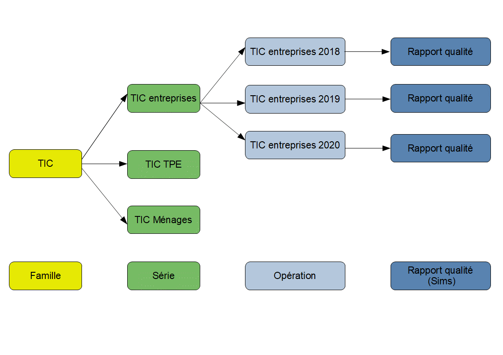

Guide utilisateur du module Opérations statistiques de Bauhaus
Version au 15/09/2021
Le module Opérations encore appelé « Bauhaus-opérations » permet de gérer les opérations statistiques de l'Insee et des SSM.
Sommaire
Quelques notions pour bien démarrer
Qu'est-ce qu'une opération statistique ?
Le référentiel de métadonnées statistiques est organisé selon une arborescence :
- Famille d'opérations statistiques
- Série d'opérations statistiques
- Opérations statistiques
- Série d'opérations statistiques
Dans la suite du document, on pourra utiliser les raccourcis « Famille », « Série » et « Opération » pour mentionner un des trois niveaux.
Une opération statistique peut être définie comme l'ensemble des phases de collecte, de traitement voire de diffusion de données. Cet ensemble peut être millésimé. Il s'agit d'enquêtes statistiques ou d'utilisation de données administratives (ex : l'enquête de fréquentation dans l'hôtellerie 2016, les Déclarations Annuelles de Données Sociales 2015) ou des nouvelles sources de données (ex : mégadonnées ou autres).
Pour illustrer cette hiérarchie, on considérera :
- la famille d'opérations statistiques « Technologie de l'information et de la communication » comprenant trois séries d'opérations statistiques pour distinguer des grands domaines, des processus ou des objectifs :
- la série d'opérations statistiques : « Enquête annuelle auprès des ménages sur les technologies de l'information et de la communication / TIC-ménages » comprenant une opération statistique pour distinguer le millésime :
- Enquête annuelle auprès des ménages sur les technologies de l'information et de la communication 2020
- la série d'opérations statistiques : « Enquête sur l'usage de l'informatique, des technologies de la communication et le commerce électronique dans les entreprises de moins de 10 personnes occupées / TIC-TPE » comprenant deux opérations statistiques pour distinguer chaque millésime :
- « Enquête sur l'usage de l'informatique et des technologies de la communication dans les entreprises de moins 10 personnes (2012) »
- « Enquête sur l'usage de l'informatique, des technologies de la communication et le commerce électronique dans les entreprises de moins de 10 personnes occupées (2016) »
- la série d'opérations statistiques « Enquête sur les technologies de l'information et de la communication dans les entreprises / TIC-entreprises » comprenant quinze opérations statistiques pour distinguer chaque millésime :
- « Enquête sur les technologies de l'information et de la communication dans les entreprises 2020 »
- « Enquête sur les technologies de l'information et de la communication dans les entreprises 2019 »
- « Enquête sur les technologies de l'information et de la communication dans les entreprises 2018 »
- etc. jusque 2006.
- la série d'opérations statistiques : « Enquête annuelle auprès des ménages sur les technologies de l'information et de la communication / TIC-ménages » comprenant une opération statistique pour distinguer le millésime :
Schéma (partiel pour des questions de lisibilité) de l'exemple 
Qu'est-ce qu'un indicateur ?
Un indicateur est un produit statistique qui peut être issu d'une à plusieurs sources.
Qu'est-ce qu'un rapport qualité ?
Le rapport qualité permet de décrire les opérations statistiques et indicateurs en respectant les principes du code de bonnes pratiques de la statistique européenne. Il contient une vingtaine de thèmes : présentation statistique, fréquence de diffusion, révision des données, traitement statistique, etc. La structure d'un rapport qualité est conforme au format Sims (Single Integrated Metadata Structure), adopté au niveau européen en 2015 pour les rapports qualité, et qui a été enrichi par l’Insee pour tenir compte de besoins spécifiques.
Le processus et les différents états des objets
Le processus est le suivant :
- le producteur gère sa documentation dans l'application de gestion. L'information saisie demeure dans une base de gestion et reste non visible par les clients qui s'alimentent dans le référentiel de diffusion RMéS.
- le producteur publie ses modifications via l'application dans les référentiels de diffusion interne et externe.
- les applications clientes internes et externes s'alimentent des informations présentes dans les référentiels de diffusion.

Les différents objets (Famille, Série, Opération, Indicateur et Rapport qualité) peuvent avoir trois états :
- "Provisoire, jamais publié". L'objet est présent dans la base de gestion mais totalement absent des référentiels de diffusion et n'est donc pas mis à disposition des clients. Il s'agit d'une version de travail en attente de publication dans les référentiels de diffusion.
- "Provisoire, déjà publié". L'objet est présent dans la base de gestion et dans les référentiels de diffusion mais son contenu diffère. L'objet a déjà été publié par le passé mais a été modifié depuis. Il s'agit également d'une version de travail en attente de publication dans les référentiels de diffusion.
- "Publié". L'objet est présent à l'identique dans la base de gestion et dans les deux référentiels de diffusion.
Naviguer dans l'application
Pour atteindre la page d'accueil du module de gestion des opérations statistiques, cliquer sur le pavé Opérations de la page d'accueil. La navigation se fait via la barre horizontale de menu en haut de la page.
Un bouton Voir l'arborescence disponible via les menus Familles, Séries et Opérations permet également d'accéder à l'arborescence de l'ensemble des Familles/Séries/Opérations. Dans cette arborescence, les boutons + et - permettent de déplier ou replier l'arborescence, de la famille à l'opération concernée. Un clic sur l'objet famille, série ou opération permet d'accéder à la page de description de cet objet.
Les différentes rôles dans l'application
Afin de garantir l'intégrité et la qualité de la base, les fonctionnalités de création et modification des familles, de création des séries et indicateurs ainsi que l'identification des propriétaires sont réservés à l'unité Qualité. Toute unité en ayant l'utilité peut demander la création d'une famille, d'une série ou d'un indicateur. La publication est de la responsabilité du propriétaire identifié et renseigné dans l'application, charge à lui éventuellement d'organiser la consultation avec d'autres utilisateurs. Dans l'application, le propriétaire ou par délégation l'unité Qualité sont habilités à publier.
Dans l'application, quatre grands profils d'utilisateurs ont été créés. Chacun correspond à un niveau d'habilitation donnant accès à différentes fonctionnalités :
- Administrateur de l'application : accès à toutes les fonctionnalités ;
- Propriétaire de série :
- rechercher, modifier et publier une série dont il est propriétaire
- rechercher, créer, modifier et publier une opération appartenant à une des séries dont il est propriétaire
- rechercher, créer, modifier et publier un rapport qualité, un document ou un lien
- rechercher, créer, modifier et publier un document ou un lien
- Propriétaire d'indicateur :
- rechercher, modifier, publier un indicateur dont il est propriétaire
- rechercher, modifier, publier un rapport qualité lié à cet indicateur
- rechercher, créer, modifier et publier un document ou un lien
- Invité (profil par défaut pour tout utilisateur se connectant à l'application) :
- rechercher et consulter une famille d'opérations statistiques, séries d'opérations statistiques, opérations statistiques, indicateurs et un rapport qualité.
Les boutons correspondant aux différentes fonctionnalités s'affichent en fonction du profil utilisateur.
Pour toute demande ou question, adresser un message à la boite fonctionnelle : :DG75-Administration RMéS
Fonctionnalités de gestion d'une famille d'opérations statistiques
Rechercher une famille
La page d'accueil Familles, accessible à partir de la barre horizontale de menu, propose deux méthodes de recherche.
- Une barre de recherche principale, qui donne accès à l'ensemble des familles enregistrées dans l'application (1) ;
- Un lien vers la page de recherche avancée, qui permet d'affiner une recherche selon différents critères (2).
(1) La barre de recherche principale propose un moteur de recherche dans lequel on peut saisir une suite de caractères correspondant à tout ou partie du libellé ou du nom court recherché. La recherche se lance automatiquement à mesure que des caractères sont saisis dans la barre de recherche. Les résultats s'affichent sur une ou plusieurs pages en fonction du nombre de familles trouvées.
Cliquer ensuite sur la famille souhaitée pour accéder à sa page de description. Pour consulter la version anglaise, cocher la case : [ ] Afficher la seconde langue. Celle-ci s'affichera à droite de la version française.
(2) La recherche avancée est disponible en cliquant sur Recherche avancée. Pour affiner la sélection, renseigner les filtres souhaités dans les champs :
- Libellé : saisir le nom ;
- Thème : sélectionner le thème.
La recherche se lance automatiquement à mesure que des critères sont renseignés dans les différents champs. Les résultats s'affichent sur une ou plusieurs pages en fonction du nombre de familles trouvées.
Cliquer ensuite sur la famille souhaitée pour accéder à sa page de description. Pour consulter la version anglaise, cocher la case : [ ] Afficher la seconde langue. Celle-ci s'affichera à droite de la version française.
Créer une famille
Avant de créer une famille, il est important de vérifier qu'elle n'a pas déjà été renseignée en utilisant les fonctionnalités de recherche.
Seule l'unité Qualité est habilitée à créer une famille.
La création d'une famille est possible à partir de la page d'accueil Familles.
- Cliquer sur le bouton Nouveau à gauche de la page. La page de création de la famille s'affiche alors.
Les champs disponibles sont les suivants :
- L' Intitulé est le libellé de l'opération. Les intitulés français et anglais sont obligatoires ;
- Le Thème de la famille ;
- Le Résumé permet d'expliquer les objectifs et une courte description générale de la famille d'opérations statistiques.
- Cliquer sur le bouton Sauvegarder
Le bouton Sauvegarder permet d'enregistrer les données dans la base de gestion. A noter que toute sauvegarde est impossible tant que les champs obligatoires, marqués d'une « * », n'ont pas été remplis. Penser à sauvegarder les informations saisies avant de changer d'écran. La sauvegarde n'entraîne pas la publication de la famille. Il est donc possible, si nécessaire, de créer la famille en plusieurs étapes. Le statut de publication de la famille passe alors en « Provisoire », jusqu'à sa publication. Pour publier une famille dans le référentiel, voir Publier une famille.
Le bouton Annuler permet de revenir à la page d'accueil de l'onglet Familles.
Modifier une famille
Seule l'unité Qualité est habilitée à modifier une famille.
La modification d'une famille est possible à partir de sa page de description.
- Cliquer en haut à droite sur le bouton Modifier
- Modifier les champs souhaités
- Cliquer sur le bouton Sauvegarder
Une fois la famille modifiée, son statut de publication devient « Provisoire, déjà publiée » ou « Provisoire » si elle n'a jamais été publiée, jusqu'à sa publication. Tant qu'elle n'est pas publiée dans le référentiel de publication (voir Publier une famille), l'ancienne version reste à disposition des applications clientes (insee.fr, mise à disposition et archivage...).
Publier une famille
Seule l'unité Qualité est habilitée à publier une famille.
L'action de publier consiste à pousser les informations saisies dans le référentiel de publication.
La publication d'une famille est possible à partir de la page de description d'une famille.
- Cliquer en haut à droite sur Publier après avoir vérifié les informations saisies.
Les changements seront reportés sur insee.fr le jour suivant la publication.
Fonctionnalités de gestion d'une série d'opérations statistiques
Rechercher une série
La page d'accueil Séries, accessible à partir de la barre horizontale de menu, propose deux méthodes de recherche :
- Une barre de recherche principale, qui donne accès à l'ensemble des Séries enregistrées dans l'application (1) ;
- Un lien vers la page de recherche avancée, qui permet d'affiner une recherche selon différents critères (2).
(1) La barre de recherche principale propose un moteur de recherche dans lequel on peut saisir une suite de caractères correspondant à tout ou partie du libellé ou du nom court recherché.
La recherche se lance automatiquement à mesure que des caractères sont saisis dans la barre de recherche. Les résultats s'affichent sur une ou plusieurs pages en fonction du nombre de séries trouvées.
Cliquer ensuite sur la série souhaitée pour accéder à sa page de description. Pour consulter la version anglaise, cocher la case : [ ] Afficher la seconde langue. Celle-ci s'affichera à droite de la version française.
(2) La recherche avancée est disponible en cliquant sur Recherche avancée. Pour affiner la sélection,renseigner les filtres souhaités dans les champs :
- Libellé : saisir le nom de la série;
- Type d'opération : sélectionner le type d'opération dans le menu déroulant
- Gestionnaire : sélectionner le gestionnaire dans le menu déroulant
- Organisme responsable : sélectionner l'organisme responsable dans le menu déroulant
- Services collecteurs : sélectionner le service collecteur dans le menu déroulant.
La recherche se lance automatiquement à mesure que des critères sont renseignés dans les différents champs. Les résultats s'affichent sur une ou plusieurs pages en fonction du nombre de séries trouvées.
Cliquer ensuite sur la série souhaitée pour accéder à sa page de description. Pour consulter la version anglaise, cocher la case : [ ] Afficher la seconde langue. Celle-ci s'affichera à droite de la version française.
Créer une série
Avant de créer une série, il est important de vérifier qu'elle n'a pas déjà été renseignée en utilisant les fonctionnalités de recherche.
Seule l'équipe d'administration est habilitée à créer une série. Pour sa création, le producteur doit fournir les libellés français et anglais de l'opération ainsi que l'unité responsable de la gestion.
La création d'une série est possible à partir de la page d'accueil Séries.
- Cliquer sur le bouton Nouveau à gauche de la page. La page de création de la série s'affiche alors.
Les champs disponibles sont les suivants :
- La série doit être rattachée à sa famille mère. Si la famille souhaitée n'existe pas, il faut demander sa création à l'équipe d'administration RMéS.
- L'Intitulé est le libellé de la série. Les intitulés français et anglais sont obligatoires.
- Le Nom court est un libellé alternatif. Il peut s'agir d‘un sigle ou d'un acronyme.
- Le Résumé permet d'expliquer les objectifs et une courte description générale du processus et de ses résultats ; du domaine statistique auquel appartiennent les résultats ; des autres résultats statistiques ;
- L' Historique est un bref historique du processus statistique et des résultats ;
- Le Type d'opération prend une des valeurs suivante : Enquête, Source administrative, Synthèse, Indicateur ;
- La Fréquence de collecte correspond au rythme de collecte des données ;
- L' Organisme responsable est l'organisme responsable de la série ;
- Les Partenaires sont les organismes associés à la conception et au pilotage de la série ;
- Les Services collecteurs correspond aux services réalisant la collecte ;
- Le Propriétaire est l'unité responsable de la gestion et de la publication de la série ainsi que des opérations statistiques et rapports qualité qui en découlent. Le propriétaire est obligatoire. Ne pas modifier le timbre propriétaire de la série au risque de perdre les droits en gestion et publication ;
- Le champ Succède à permet de préciser si une série succède à une autre. Si une Série B succède à une Série A, alors la Série A est automatiquement remplacée par la Série B ;
- Le champ Remplacée par permet de préciser si une série est remplacée par une autre. Si une Série A est remplacée par une Série B, alors la Série B succède automatiquement remplacée à la la Série A ;
- Le champ Indicateurs produits permet de préciser les indicateurs produits à partir de la contributions de la série ;
- Les Séries ou Indicateurs liés permet de renvoyer vers des séries ou des indicateurs connexes.
Le bouton Sauvegarder permet d'enregistrer les données dans la base de gestion. A noter que toute sauvegarde est impossible tant que les champs obligatoires, marqués d'une « * », n'ont pas été remplis. Penser à sauvegarder les informations saisies avant de changer d'écran. Il est à noter que la sauvegarde n'entraîne pas la publication de la série. Il est donc possible, si nécessaire, de créer la série en plusieurs étapes. Le statut de publication de la série passe alors en « Provisoire », jusqu'à sa publication.
Le bouton Annuler permet de revenir à la page d'accueil de l'onglet Séries.
Pour publier une série dans le référentiel, voir Publier une série.
Modifier une série
La modification d'une série est possible à partir de sa page de description. Seul le propriétaire de la série, ou par délégation l'unité Qualité (après échanges de mails), est habilité à publier une série.
- Cliquer en haut à droite sur le bouton Modifier
- Modifier les champs souhaités
- Cliquer sur le bouton Sauvegarder
Une fois la série modifiée, son statut de publication devient « Provisoire, déjà publiée » ou « Provisoire » si elle n'a jamais été publiée, jusqu'à sa publication. Tant qu'elle n'est pas publiée dans le référentiel de publication (voir Publier une série), l'ancienne version reste à disposition des applications clientes (insee.fr, mise à disposition et archivage...).
Publier une série
L'action de publier consiste à pousser les informations saisies dans le référentiel de publication.
La publication d'une série est possible à partir de la page de description d'une série. Seul le propriétaire de la série (i.e la personne désignée dans l'application comme ayant ce rôle et appartenant à l'unité dont le timbre est le même que le propriétaire de la série), ou par délégation l'unité Qualité (après échanges de mails), est habilité à publier une série.
- Cliquer en haut à droite sur Publier après avoir vérifié les informations saisies.
Une série ne peut être publiée que si la famille à laquelle elle est rattachée est déjà publiée. Sinon, publier d'abord la famille. Pour publier cette famille, contacter l'administrateur RMéS.
Les changements seront reportés sur insee.fr le jour suivant la publication.
Fonctionnalités de gestion des opérations statistiques
Rechercher une opération statistique
La page d'accueil Opérations, accessible à partir de la barre horizontale de menu, propose une barre de recherche principale qui donne accès à l'ensemble des Opérations statistiques enregistrées dans l'application.
La barre de recherche principale propose un moteur de recherche dans lequel on peut saisir une suite de caractères correspondant à tout ou partie du libellé ou du nom court recherché.
La recherche se lance automatiquement à mesure que des caractères sont saisis dans la barre de recherche. Les résultats s'affichent sur une ou plusieurs pages en fonction du nombre d'opérations statistiques trouvées.
Cliquer sur l'opération statistique souhaitée pour accéder à sa page de description. Pour consulter la version anglaise, cocher la case : [ ] Afficher la seconde langue. Celle-ci s'affichera à droite de la version française.
Créer une opération statistique
Avant de créer une opération statistique, il est important de vérifier qu'elle n'a pas déjà été renseignée en utilisant les fonctionnalités de recherche.
La création d'une opération est possible à partir de la page d'accueil Opérations.
- Cliquer sur le bouton Nouveau à gauche de la page. La page de création de l'opération s'affiche alors.
Les champs disponibles sont les suivants :
- L'opération doit être rattachée à sa série mère. Si la série souhaitée n'existe pas, demander sa création à l'administrateur RMéS.
- L' Intitulé est le libellé de l'opération. Les intitulés français et anglais sont obligatoires.
- Le Nom court est un libellé alternatif. Il peut s'agir d‘un sigle ou d'un acronyme.
- Cliquer sur le bouton Sauvegarder
Le bouton Sauvegarder permet d'enregistrer les données dans la base de gestion. A noter que toute sauvegarde est impossible tant que les champs obligatoires, marqués d'une « * », n'ont pas été renseignés. Penser à sauvegarder les informations saisies avant de changer d'écran. La sauvegarde n'entraîne pas la publication de l'opération. Il est donc possible, si nécessaire, de créer l'opération en plusieurs étapes. Le statut de publication de l'opération passe alors en « Provisoire », jusqu'à sa publication. Pour publier une opération dans le référentiel, voir Publier une opération.
Le bouton Annuler permet de revenir à la page d'accueil de l'onglet Opérations.
A noter : suite à la création d'une opération, il vous sera proposé de créer un rapport qualité soit à partir d’un rapport vierge soit en dupliquant un rapport qualité d’une opération (voir Dupliquer un rapport qualité).
Modifier une opération
La modification d'une opération est possible à partir de sa page de description.
- Cliquer en haut à droite sur le bouton Modifier
- Modifier les champs souhaités
- Cliquer sur le bouton Sauvegarder
Une fois l'opération modifiée, son statut de publication devient « Provisoire, déjà publiée » ou « Provisoire, jamais publiée » si elle n'a jamais été publiée, jusqu'à sa publication. Tant qu'elle n'est pas publiée dans le référentiel de publication (voir Publier une opération), l'ancienne version reste à disposition des applications clientes (insee.fr, mise à disposition et archivage, etc.).
Publier une opération
L'action de publier consiste à pousser les informations saisies dans le référentiel de publication.
La publication d'une opération est possible à partir de la page de description d'une opération. Seul le propriétaire de la série à laquelle appartient l'opération (i.e la personne désignée dans l'application comme ayant ce rôle et appartenant à l'unité dont le timbre est le même que le propriétaire de la série d'opérations statistiques), ou par délégation l'unité Qualité (après échanges de mails), est habilité à publier une opération.
- Cliquer en haut à droite sur Publier après avoir vérifié les informations saisies.
Une opération ne peut être publiée que si la série à laquelle elle est rattachée est déjà publiée. Sinon, publier d'abord la série.
Les changements seront reportés sur insee.fr le jour suivant la publication.
Fonctionnalités de gestion des indicateurs
Rechercher un indicateur
La page d'accueil Indicateurs, accessible à partir de la barre horizontale de menu, propose deux méthodes de recherche :
- Une barre de recherche principale, qui donne accès à l'ensemble des Indicateurs enregistrés dans l'application (1) ;
- Un lien vers la page de recherche avancée, qui permet d'affiner une recherche selon différents critères (2).
(1) La barre de recherche principale propose un moteur de recherche dans lequel on peut saisir une suite de caractères correspondant à tout ou partie du libellé ou du nom court recherché.
La recherche se lance automatiquement à mesure que des caractères sont saisis dans la barre de recherche. Les résultats s'affichent sous le moteur de recherche, sur une ou plusieurs pages en fonction du nombre d'indicateurs trouvés.
Cliquer ensuite sur l'indicateur souhaité pour accéder à sa page de description. Pour consulter la version anglaise, cocher la case : [ ] Afficher la seconde langue. Celle-ci s'affichera à droite de la version française.
(2) La recherche avancée est disponible en cliquant sur Recherche avancée. Pour affiner la sélection, renseigner les filtres souhaités dans les champs :
- Libellé : saisir le nom de l'indicateur ;
- Organisme responsable : sélectionner l'organisme responsable dans le menu déroulant ;
- Gestionnaire : sélectionner le gestionnaire dans le menu déroulant.
La recherche se lance automatiquement à mesure que des critères sont renseignés dans les différents champs. Les résultats s'affichent sur une ou plusieurs pages en fonction du nombre d'indicateurs trouvés. Cliquer ensuite sur l'indicateur recherché pour accéder à sa page de description.
Pour consulter la version anglaise, cocher la case : [ ] Afficher la seconde langue. Celle-ci s'affichera à droite de la version française.
Créer un indicateur
Avant de créer un indicateur, il est important de vérifier qu'il n'a pas déjà été renseigné en utilisant les fonctionnalités de recherche.
Seule l'unité Qualité est habilitée à créer un indicateur.
La création d'un indicateur est possible à partir de la page d'accueil Indicateurs.
- Cliquer sur le bouton Nouveau à gauche de la page. La page de création de l'indicateur s'affiche alors.
Les champs disponibles sont les suivantes :
- L'Intitulé est le libellé de l'indicateur. Les intitulés français et anglais sont obligatoires.
- Le Nom court est un libellé alternatif. Il peut s'agir d‘un sigle ou d'un acronyme.
- Le Résumé permet d'expliquer les objectifs et une courte description générale du processus et de ses résultats ; du domaine statistique auquel appartiennent les résultats ; des autres résultats statistiques ;
- L'Historique est un bref historique du processus statistique et des résultats ;
- La Fréquence de diffusion correspond au rythme de collecte des données ;
- L'Organisme responsable est l'organisme responsable de l'indicateur ;
- Les Partenaires sont les organismes associés à la conception et au pilotage de l'indicateur ;
- Le Propriétaire est l'unité responsable de la gestion et de la publication de l'indicateur ainsi que des opérations statistiques et rapports qualité qui en découlent ;
- Le champ Succède à permet de préciser si un indicateur succède à un autre. Si un indicateur B succède à un indicateur A, alors l'indicateur A est automatiquement remplacé par l'indicateur B ;
- Le champ Remplacée par permet de préciser si un indicateur est remplacé par un autre. Si un indicateur A est remplacé par un indicateur B, alors l'indicateur A est automatiquement remplacé par l'indicateur B ;
- Le champ Produits de permet de préciser les séries contribuant à la production de l'indicateur ;
- Les Séries ou Indicateurs liés permet de renvoyer vers des séries ou des indicateurs connexes.
Le bouton Annuler permet de revenir à la page d'accueil de l'onglet Indicateurs.
Le bouton Sauvegarder permet d'enregistrer les données dans la base de gestion. A noter que toute sauvegarde est impossible tant que les champs obligatoires, marqués d'une « * », n'ont pas été remplis.
Penser à sauvegarder les informations saisies avant de changer d'écran. Il est à noter que la sauvegarde n'entraîne pas la publication de l'indicateur. Il est donc possible, si nécessaire, de créer l'indicateur en plusieurs étapes. Le statut de publication de l'indicateur passe alors en « Provisoire », jusqu'à sa publication.
Pour publier un indicateur dans le référentiel, voir Publier un indicateur.
Modifier un indicateur
La modification d'un indicateur est possible à partir de sa page de description.
- Cliquer en haut à droite sur le bouton Modifier
- Modifier les champs souhaités
- Cliquer sur le bouton Sauvegarder
Une fois l'indicateur modifié, son statut de publication devient « Provisoire, déjà publié » ou « Provisoire, jamais publié » s'il n'a jamais été publié, jusqu'à sa publication. Tant qu'il n'est pas publié dans le référentiel de publication (voir Publier un indicateur), l'ancienne version reste à disposition des applications clientes (insee.fr, mise à disposition et archivage, etc.).
Publier un indicateur
L'action de publier consiste à pousser les informations saisies dans le référentiel de publication.
La publication d'un indicateur est possible à partir de sa page de description. Seul le propriétaire de l'indicateur (i.e la personne désignée dans l'application comme ayant ce rôle et appartenant à l'unité dont le timbre est le même que le propriétaire de l'indicateur), ou par délégation l'unité Qualité (après échanges de mails), est habilité à publier un indicateur.
- Cliquer en haut à droite sur Publier après avoir vérifié les informations saisies.
Les changements seront reportés sur insee.fr le jour suivant la publication.
Gérer un rapport qualité
Créer un rapport qualité
La création d'un rapport qualité est possible à partir de son opération.
- Cliquer sur le bouton Créer le rapport en haut de la page. La page de création du rapport qualité s'affiche alors ;
- Vous avez également la possibilité de créer un rapport qualité à partir d’un rapport qualité existant d’une opération précédente. Choisir dans le champ qui s’affiche (juste au dessus de la rubrique S.1 contact) le rapport qualité que vous souhaitez dupliquer dans la liste déroulante.
Le bouton Annuler permet de revenir à la page d'accueil de l'opération.
Le bouton Sauvegarder permet d'enregistrer les données dans la base de gestion. A noter que toute sauvegarde est impossible tant que les champs obligatoires, marqués d'une « * », n'ont pas été remplis. Penser à sauvegarder les informations saisies avant de changer d'écran. Il est à noter que la sauvegarde n'entraîne pas la publication du rapport. Il est donc possible, si nécessaire, de créer le rapport en plusieurs étapes. Le statut de publication du rapport passe alors en « Provisoire », jusqu'à sa publication.
Pour publier un rapport dans le référentiel, voir Publier un rapport qualité.
Modifier un rapport qualité
La modification d'un rapport est possible à partir de sa page de description.
- Cliquer en haut à droite sur le bouton Modifier
- Modifier les champs souhaités
- Cliquer sur le bouton Sauvegarder
Une fois le rapport modifié, son statut de publication devient « Provisoire, déjà publiée » ou « Provisoire, jamais publiée » si elle n'a jamais été publiée, jusqu'à sa publication. Tant qu'elle n'est pas publiée dans le référentiel de publication (voir Publier un rapport qualité), l'ancienne version reste à disposition des applications clientes (insee.fr, mise à disposition et archivage, etc.).
A noter : lorsque vous modifiez un rapport, pour créer un nouveau document ou lien, il faut sortir de la page d'édition et ne pas oublier de sauvegarder (voir Créer un document et Créer un lien).
Dupliquer un rapport qualité
La duplication d'un rapport est possible à partir de sa page de description. Seul le propriétaire du rapport (i.e la personne désignée dans l'application comme ayant ce rôle et appartenant à l'unité dont le timbre est le même que le propriétaire de la série d'opérations statistiques), ou par délégation l'unité Qualité (après échanges de mails), est habilité à dupliquer un rapport. Il est uniquement possible de dupliquer un rapport attaché au niveau de l'opération statistiques et de l'associer à une opération statistique de la même série.
- Cliquer sur le bouton Dupliquer
- Sélectionner l'opération statistique cible
- Cliquer sur le bouton Sauvegarder
Une fois le rapport modifié, son statut de publication devient « Provisoire, déjà publiée » ou « Provisoire, jamais publiée » si elle n'a jamais été publiée, jusqu'à sa publication. Tant qu'elle n'est pas publiée dans le référentiel de publication (voir Publier un rapport), l'ancienne version reste à disposition des applications clientes (insee.fr, mise à disposition et archivage, etc.).
Publier un rapport qualité
L'action de publier consiste à pousser les informations saisies dans le référentiel de diffusion. Lors de la publication d'un rapport, toutes les rubriques sont publiées exceptées les rubriques S.1.3 à S.1.8. Leur contenu est remplacé sur insee.fr par l’adresse mél d’insee contact.
La publication d'un rapport est possible à partir de sa page de description. Seul le propriétaire du rapport (i.e la personne désignée dans l'application comme ayant ce rôle et appartenant à l'unité dont le timbre est le même que le propriétaire de la série d'opérations statistiques), ou par délégation l'unité Qualité (après échanges de mails), est habilité à publier un rapport.
- Cliquer en haut à droite sur Publier après avoir vérifié les informations saisies.
Un rapport ne peut être publié que si l'opération à laquelle il est rattaché est déjà publiée. Sinon, publier d'abord l'opération.
Les changements (hors rubriques décrivant le contact) seront reportés sur insee.fr le jour suivant la publication.
Exporter un rapport qualité
L'export d'un rapport est possible à partir de sa page de description. L'export inclut également les informations descriptives de la série et de l'opération statistique.
- Cliquer en haut à droite sur le bouton Exporter. Une fenêtre s'ouvre alors.
- Sélectionner les options proposées :
- Inclure ou non les rubriques vides
- Inclure ou non la première langue
- Inclure ou non la seconde langue
- Cliquer sur Exporter
Une fichier au format Open Document est alors exporté. La version actuelle de la fonctionnalité n'exporte pas les documents joints aux différentes rubriques mais seulement un descriptif du document.
A noter : dans la version actuelle, seul un descriptif des documents est exporté, les fichiers ne le sont pas (encore)
Fonctionnalités de gestion des documents et des liens
Un menu Documents/Liens, situé en haut à droite, permet de gérer des documents et des liens utiles à certaines rubriques d'un rapport qualité.
Ces documents et liens, une fois créés sont réutilisables autant que de besoin dans les rubriques d'un rapport qualité.
Rechercher un document ou un lien
La page d'accueil Documents / Liens, accessible à partir de la barre horizontale de menu, propose une barre de recherche principale qui donne accès à l'ensemble des documents et liens créés dans la base de gestion des opérations statistiques RMéS. Cela signifie qu'un lien et un document peuvent être partagés entre plusieurs rapports qualité.
Le bouton Documents / Liens permet de rechercher des documents et/ou des liens.
Le bouton Documents permet de filtrer la rechercher sur les documents.
Le bouton Liens permet de filtrer la recherche sur les liens.
La barre de recherche principale propose un moteur de recherche dans lequel on peut saisir une suite de caractères correspondant à tout ou partie du libellé recherché. La recherche se lance automatiquement à mesure que des caractères sont saisis dans la barre de recherche. Les résultats s'affichent sous le moteur de recherche, sur une ou plusieurs pages en fonction du nombre de documents ou liens trouvés.
Cliquer sur le document ou le lien souhaité pour accéder à sa page de description. Pour consulter la version anglaise, cocher la case : [ ] Afficher la seconde langue. Celle-ci s'affichera à droite de la version française.
Créer un document
Avant de créer un document, il est important de vérifier qu'il n'a pas déjà été renseigné en utilisant les fonctionnalités de recherche.
La création d'un document est possible à partir de la page d'accueil Documents / Liens.
- Cliquer sur le bouton Nouveau Document à gauche de la page. La page de création du document s'affiche alors.
Les champs disponibles sont les suivants :
- L'Intitulé est le libellé du document. Afin de faciliter la recherche d'un document, indiquer un intitulé explicite (ex : Questionnaire 2019 de l'enquête sur les technologies de l'information et de la communication et le commerce électronique (auprès des entreprises) / TIC 2019). Les intitulés français et anglais sont obligatoires ;
- La Description permet de décrire le document. Il s'agit d'une information que l'on peut retrouver en infobulle ;
- La Date de mise à jour est la date de dernière mise à jour du document. La date de mise à jour est obligatoire ;
- Pour joindre un Fichier, se placer sur le champ ad hoc et faire un « glisser-déposer » ou cliquer dans le champ pour ajouter le document. Le nom du fichier peut uniquement contenir des caractères alphanumériques (hors caractères accentués), des tirets et des tirets bas. Le document est obligatoire ;
- La Langue correspond à la langue du contenu du document. La langue est obligatoire.
Le bouton Sauvegarder permet d'enregistrer les données dans la base de gestion. A noter que toute sauvegarde est impossible tant que les champs obligatoires, marqués d'une « * », n'ont pas été remplis. Penser à sauvegarder les informations saisies avant de changer d'écran. Il est à noter que la sauvegarde n'entraîne pas la publication du document. Il est publié en même temps que la publication du rapport qualité.
Le bouton Annuler permet de revenir à la page d'accueil de l'onglet Documents / Liens.
Modifier un document
La modification d'un document est possible à partir de sa page de description.
- Cliquer en haut à droite sur le bouton Modifier
- Modifier les champs souhaités
- Cliquer sur le bouton Sauvegarder
Lorsque vous modifiez un document (libellé, description, date, langue), alors pour publier les changements, il faut publier le rapport qualité qui référence le document. Si le rapport est à l'état "Publié", le bouton n'est alors pas visible. Réalisez les actions suivantes :
- cliquer en haut à droite sur le bouton Modifier
- cliquer sur le bouton Sauvegarder. Cette action permet de passer l'état du rapport qualité de "Publié" à "Provisoire, déjà publié" et rend alors visible le bouton "Publier"
- cliquer sur le bouton Publier
A noter : si un document est partagé entre plusieurs rapports qualité associés à des séries d'opérations statistiques dont les timbres propriétaires sont différents, alors vous ne pourrez pas modifier le document (cas assez rare). Pour le modifier, contacter l'équipe d'administration.
Créer un lien
Avant de créer un lien, il est important de vérifier qu'il n'a pas déjà été renseigné en utilisant les fonctionnalités de recherche.
La création d'un lien est possible à partir du menu Documents / Liens.
- Cliquer sur le bouton Nouveau Lien à gauche de la page. La page de création du lien s'affiche alors.
Les champs disponibles sont les suivants :
- L' Intitulé est le libellé du lien. Les intitulés français et anglais sont obligatoires ;
- La Description permet de décrire le lien. Il s'agit d'une information que l'on peut retrouver en infobulle ;
- Le Lien correspond à l'URL de la page sur laquelle renvoyer. Le lien est obligatoire ;
- La Langue correspond à la langue du contenu de la page sur laquelle on renvoie. La langue est obligatoire.
Le bouton Sauvegarder permet d'enregistrer les données dans la base de gestion. A noter que toute sauvegarde est impossible tant que les champs obligatoires, marqués d'une « * », n'ont pas été remplis. Penser à sauvegarder les informations saisies avant de changer d'écran. Il est à noter que la sauvegarde n'entraîne pas la publication du lien. Il est publié en même temps que la publication du rapport qualité.
Le bouton Annuler permet de revenir à la page d'accueil de l'onglet Documents / Liens.
Modifier un lien
La modification d'un lien est possible à partir de sa page de description.
- Cliquer en haut à droite sur le bouton Modifier
- Modifier les champs souhaités
- Cliquer sur le bouton Sauvegarder
Lorsque vous modifiez un lien (libellé, description, date, langue), alors pour publier les changements, il faut publier le rapport qualité qui référence le lien. Si le rapport est à l'état "Publié", le bouton n'est alors pas visible. Réalisez les actions suivantes :
- cliquer en haut à droite sur le bouton Modifier
- cliquer sur le bouton Sauvegarder. Cette action permet de passer l'état du rapport qualité de "Publié" à "Provisoire, déjà publié" et rend alors visible le bouton "Publier"
- cliquer sur le bouton Publier
A noter : si un lien est partagé entre plusieurs rapports qualité associés à des séries d'opérations statistiques dont les timbres propriétaires sont différents, alors vous ne pourrez pas modifier le lien (cas assez rare). Pour le modifier, contacter l'équipe d'administration.